Introduction à l'audionumérique
Axel Chemla--Romeu-Santos
axel.chemla-romeu-santos@univ-paris8.fr
http://domkirke.github.io
- Investiguer en détail les différents éléments de la chaîne de numérisation du signal
- Obtenir des notions d'analyse du signal sonore & musical
- Avoir un panorama large des procédés de traitement / synthèse du son
- Avoir un rapport esthétique & musical à ces question techniques
Introduction à l'audionumérique
Objectifs :
11 séances :
26 janvier
2 février
9 février
16 février
2 mars
9 mars
16 mars
23 mars -> ???
30 mars
13 avril
27 avril
Programme
- Représentation du signal (fréq, amplitude, période, phase, etc)
- Numérisation du signal (Nyquist, etc)
- Transformation de Fourier (Théorème de Fourier, FFT, DFT)
- Données numériques (flux, formats, structure de données)
- La chaîne électroacoustique
- L'ordinateur & culture numérique (plug-in, architecture, etc.)
- Outils (filtres, compresseurs, analyser, reverb)
- Introduction à la synthèse sonore et au traitement sonore créatif
- Découverte de l'informatique musicale (Csound, Faust, SuperCollider, Pd, Max)
Ressources :
Sites:
https://jackschaedler.github.io/
https://cycling74.com/tutorials
https://www.reaper.fm/videos.php
Vidéos:
. Fabfilter - Youtube
. Dan Worrall - Youtube
. Jipihorn (vidéos45, 46, 61, 122, 123) - Youtube
. DeltaSigmaTV - Youtube
Logiciels:
. Reaper, Audacity
. Max 8 / PureData / SuperCollider / Scilab / Faust
Ressources :
Bibliographie :
Curtis Roads, L'audionumérique : Musique et informatique, Dunod
Denis Mercier, Le livre des techniques du son : notions fondamentales (tome 1), Dunod
Miller Puckett, Theory and Techniques of Electronic Music, 2003
1. Bases d'un signal
Définition :
Phénomène physique (tension, courant, champ électromagnétique, onde sonore ou lumineuse) transmettant une information.
CNRTL - déf.B.3.
1. Bases d'un signal
A) Domaine Temporel :Lorsqu'un signal décrit le changement d'un phénomène physique au fil du temps, nous le référons comme un signal temporel.
Nous pouvons penser à des phénomènes du monde réel comme l'altitude d'un avion, la température dans une ville ou la vitesse d'une automobile comme des exemples de signaux de domaine temporel.

10000
8000
6000
4000
2000
Altitude (mètres)
Temps (minutes)


enregistrer
analyser
transporter
dupliquer
…


représenter
prédire
Traitement du signal

Modes de médiatisation du son
"direct"
analogique
digital


analogique : signal continu
digital : signal échantilloné
(ou discret)
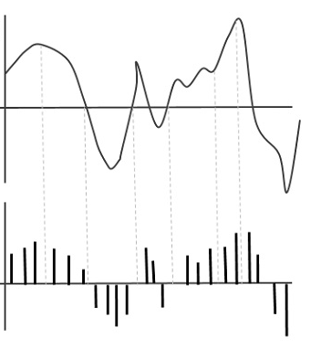
0 1 0 0 0 1 1 1 0 0 1 0 0 1 1 0 0
0 1 0 0 0 1 1 1 0 0 1 0 0 1 1 0 0
demo absurde
1. Bases d'un signal
1. Bases d'un signal
A.6) Description du signal sonore, une onde mécanique progressive :
Une onde mécanique progressive est définie par un transport d’énergie sans déplacement de matière. Elle modifie localement et temporairement (d’où le terme de perturbation) les propriétés mécaniques (comme la pression par exemple) d’un milieu matériel.
1. Bases d'un signal

volts, degrés, pression, ...
1. Bases d'un signal
référence (le "zero")
+ 1
•
•
- 1
0
1. Bases d'un signal
A.1) Signaux périodiques :
Un signal est dit périodique dans le temps si l'on peut trouver une période au bout de laquelle le même phénomène se répète à l'identique.

A : Amplitude
T : Période (s)
f : Fréquence (Hz)
1. Bases d'un signal
périodique
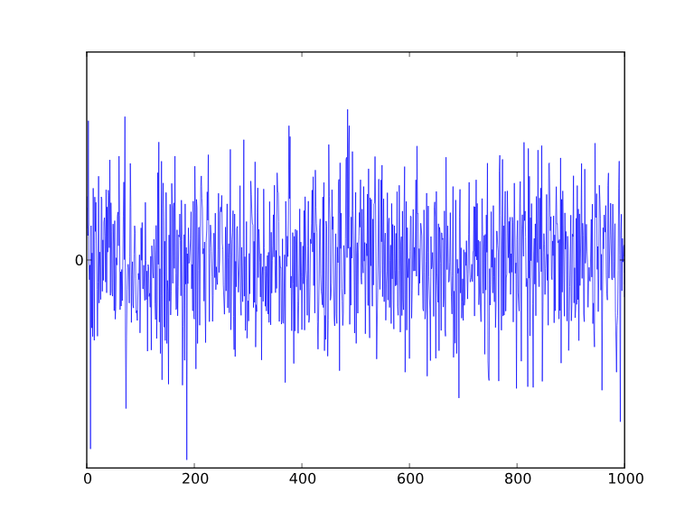
bruit

1 s = 1 Hz
0.5s = 2 Hz
0.33s = 3Hz
1. Bases d'un signal
A.1) Signaux périodiques :
x : abscisse : cosinus
y: ordonnée : sinus
1. Bases d'un signal
A.2) Signaux périodiques purs :


Sinus
Cosinus
A.3) Exercices :
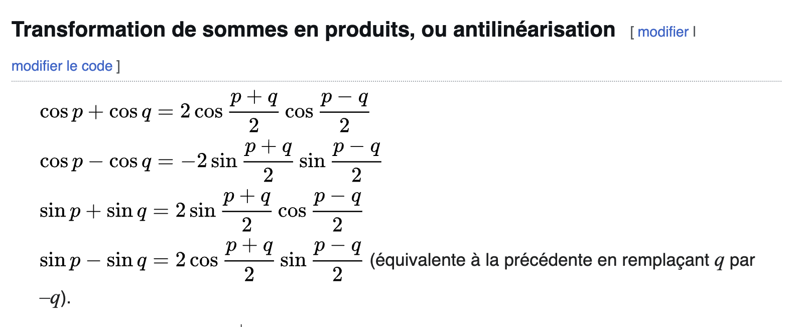
cosinus et sinus sont intimement liés par plusieurs formules, notamment par addition
1. Bases d'un signal
Autres signaux périodiques courants :
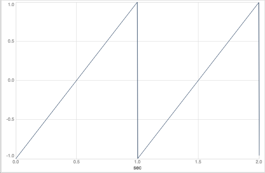
Square
Saw


1. Bases d'un signal
Domaine Fréquentiel :Alors qu'un graphe dans le domaine temporel présentera les variations dans l'allure d'un signal au cours du temps, un graphe dans le domaine fréquentiel montrera quelle proportion du signal appartient à telle ou telle bande de fréquence, parmi plusieurs bancs.
1. Bases d'un signal
B.1) Domaine Fréquentiel : notion d'harmonique


Jean-Philippe Rameau, Traité de l'Harmonie Réduite a ses Principes Naturels (1722)


Jospeh Fourier, Théorie Analytique de la Chaleur (1822)
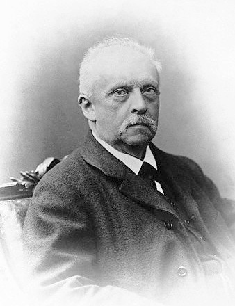
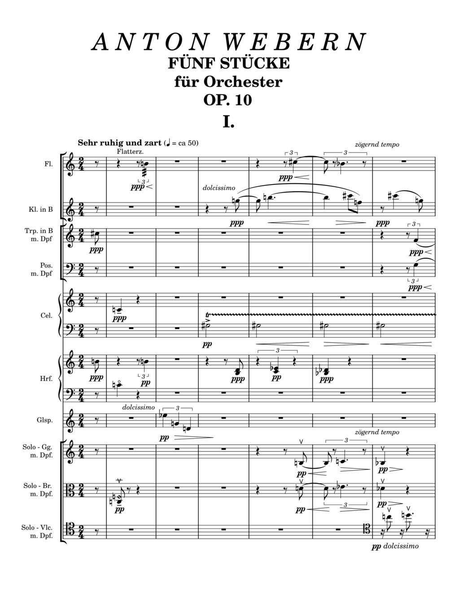
Hermann von Helmoltz, "Klangfarben": couleurs sonores
Webern : "Klangfarbenmelodie" (1913)
Musique sérielle (début XXème siècle)
Musique spectrale (fin XXème siècle)Gérard Grisey : "Partiels" (1975)
1. Bases d'un signal
B.2) Domaine Fréquentiel : Timbre
voir Reaper "sin_listening.rpp"
1. Bases d'un signal
B.3) Domaine Fréquentiel : Théorème de Fourier
tout signal périodique peut-être décomposé comme une combinaison infinie de sinus et cosinus
*dans des conditions physiques
Décomposition en série de Fourier
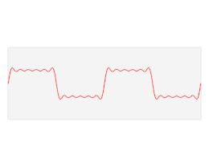
avec , la vitesse angulaire/pulsation en radians/s (2.pi.f)
1. Bases d'un signal
B.4) Domaine Fréquentiel : Et pour des signaux non périodiques? voir Max "pseudo-periodique.maxpat"
Décomposition en série de Fourier
-> somme de fréquences harmoniques (f, 2*f, 3*f...)
1. Bases d'un signal
B.4) Domaine Fréquentiel : Et pour des signaux non périodiques? Décomposition en série de Fourier
-> somme de fréquences harmoniques (f, 2*f, 3*f...)
Transformée de Fourier
-> somme infinie de toutes les fréquences
1. Bases d'un signal
B.5) Domaine Fréquentiel : Transformée de Fourier
voir Plugin Doctor


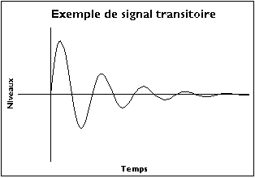
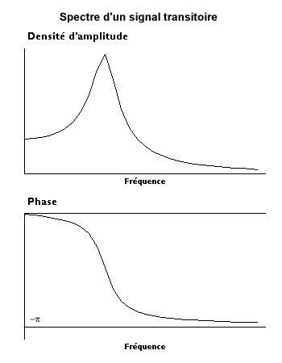
Domaine temporel
Domaine fréquentiel
Transformée de Fourier
Magnitude
Signal temporel
Phase
Décomposition en série de Fourier
1. Bases d'un signal
B.6) Domaine Fréquentiel : FFT
La transformation de Fourier rapide (sigle anglais : FFT ou fast Fourier transform) est un algorithme de calcul de la transformation de Fourier discrète (TFD). Sa complexité varie en O(n log n) avec le nombre n de points, alors que la complexité de l’algorithme « naïf » s'exprime en O(n^2). Ainsi, pour n = 1 024, le temps de calcul de l'algorithme rapide peut être 100 fois plus court que le calcul utilisant la formule de définition de la TFD.

-> "disparition" de la dimension temporelle
équivalent entre le signal temporel x(t) et le spectre fréquentiel X(f)


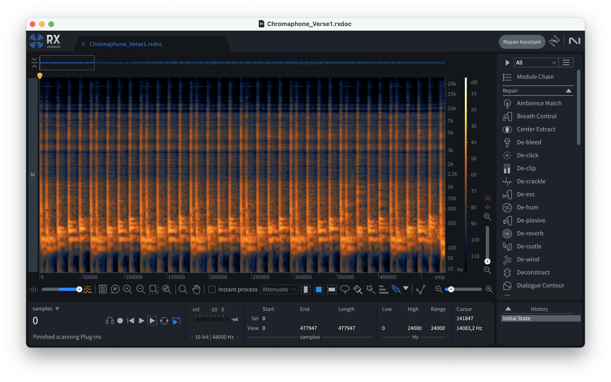
"spectrogramme" : visualisation de la magnitude du spectre
équivalent entre le signal temporel x(t) et le spectre fréquentiel X(f)
c'est un espace d'opérations sonores!
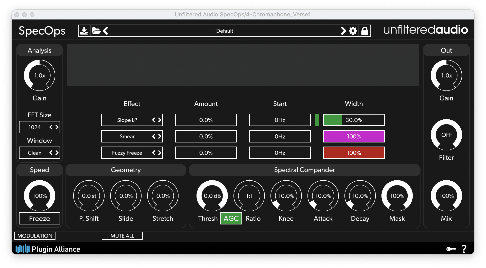
1. Bases d'un signal
C) Approfondissement Phase :
1. Bases d'un signal
C) Approfondissement Phase :
Voir patch signal.maxpat, onglet phase
1. Bases d'un signal
C.1) Somme de signaux :
1. Bases d'un signal
C.2) Filtrage en peigne :
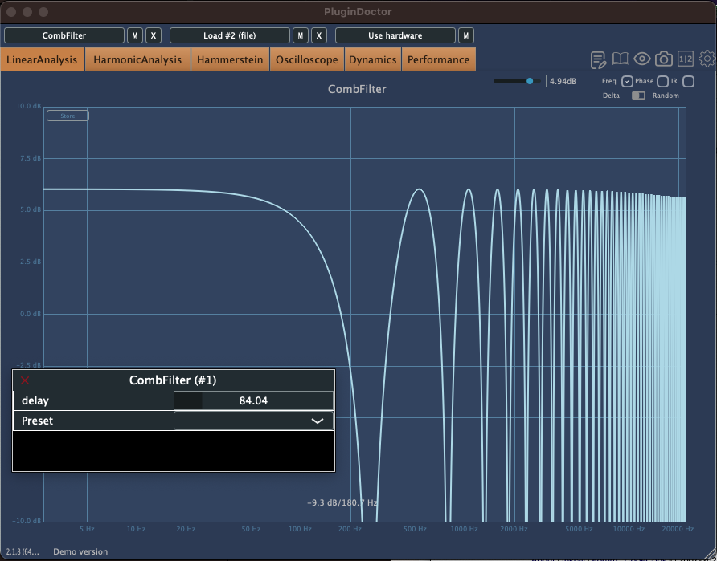
voir Plugin Doctor
1. Bases d'un signal
C.2) Filtrage en peigne :

Filtrage en peigne résultant de la somme d'un signal et son double retardé
Denis Mercier, Livre des techniques du son, p.125
1. Bases d'un signal
C.3) Ondes stationnaires :
Représentation du niveau de pression dans une pièce